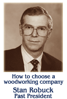

SALINA PLANING MILL, INC.
SELECTING A WOODWORK COMPANY
Many important decisions and choices must be made on your building project. The architect and interior designer are chosen based upon their expertise and understanding of the owner's needs and budget. Similarly, the chosen contractor must be one prepared to execute quality work on a timely and cost effective basis.
Who will be your woodworker? The selected woodwork company will have a definite impact on your completed project. The woodwork and cabinetry is a very visible and operating part of a building. As do the furnishings and landscaping, the woodwork makes a statement. Is it average, below average, or just what you had in mind? The woodwork must be right the first time. Seldom is woodwork "up-graded" a few years after move-in. Left unattended, the "low bidder", regardless of capability, may be your woodworker.
Salina Planing Mill merits your consideration. We've been in the woodworking business nearly 100 years. If chosen to be the woodwork company, we can work with the owner, the architect, and the contractor to achieve the desired results. We are attentive to cost, and can offer options and alternatives to meet the project's budget. We have the people, facilities, and experience to do it right.
Select Salina Planing Mill. Check our references. We would like to hear from you.
Stan Robuck,
President & Owner 1984-2004
| MEMBERSHIP | ||
|---|---|---|
| Architectural Woodwork Institute Certified "Premium" Grade Manufacture, Finish and Installation |
 | |
| Kansas Associated General Contractors | ||